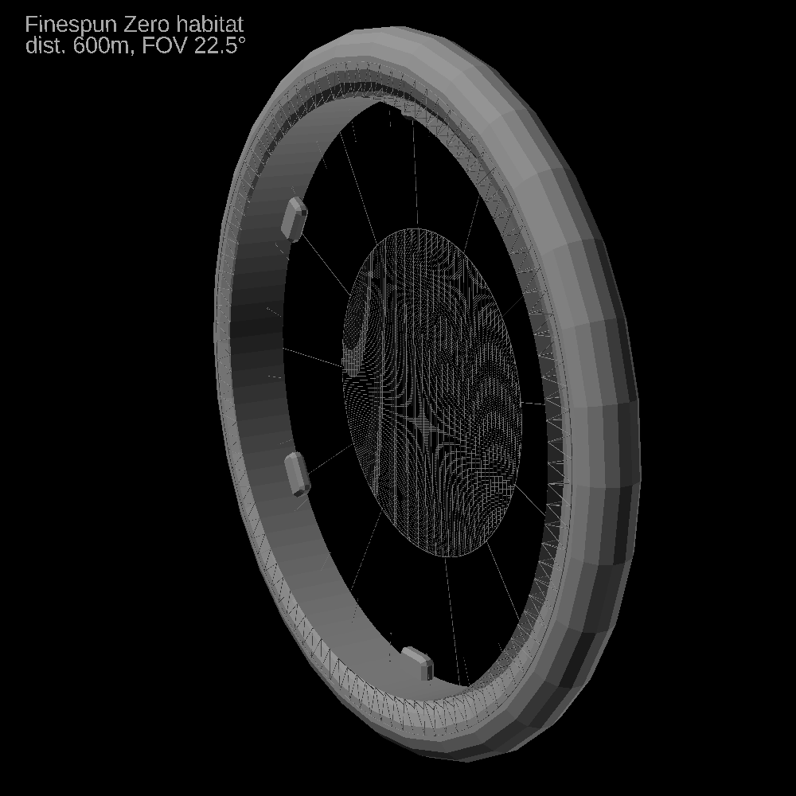
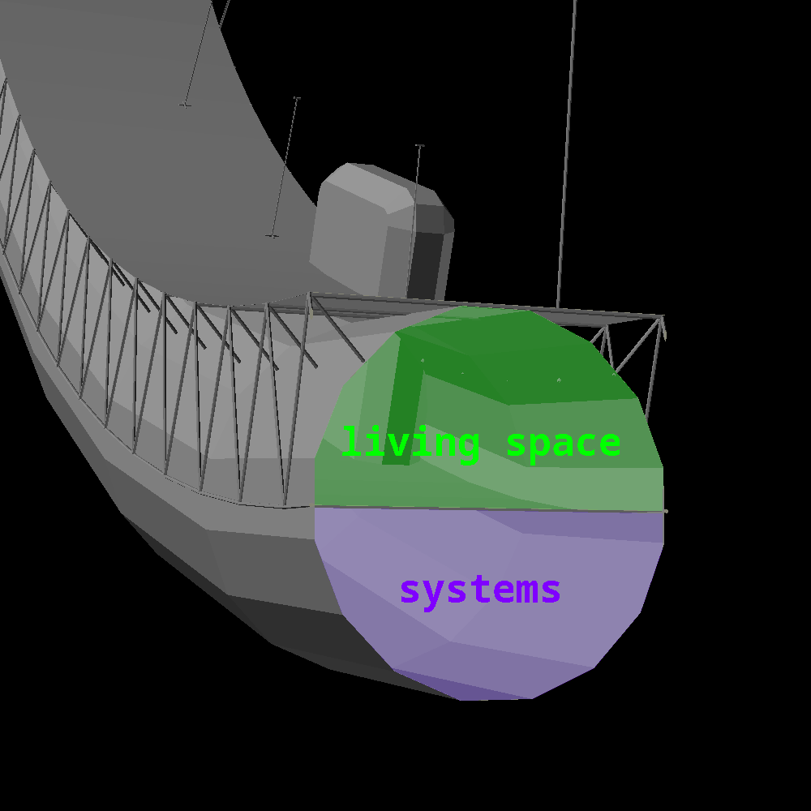
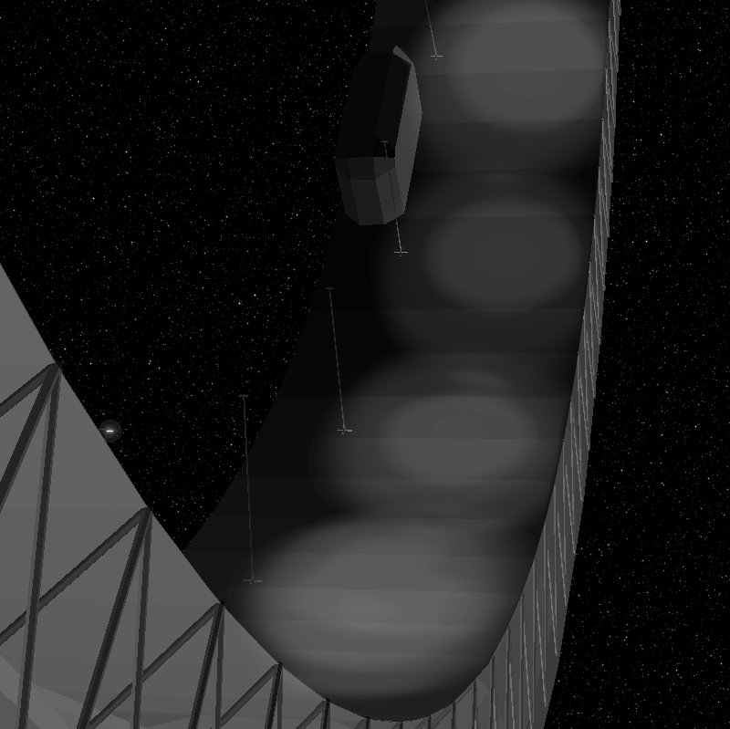

Finespun
Finespun

| summary habitat data table | |
|---|---|
| Habitat radius | edge: 110 m, floor: 100m, runway: 90m |
| Habitat length | 20 m |
| Aerial density | 79kg/m2 |
| Structural mass | 6 762 526.4 kg |
| Structural volume | 856.016m3 |
| Presurized internal volume | 197 392.088 m3 |
| Hull thickness | 0.01 m |
| Hull external surface | 39 478.41760 m2 |
| Provided centrifugal gravity | 4m/s2 at floor, 3.6m/s2 at runway |
| Internal atmospheric pressure | 21 000 Pa (0.207 atm ) |
| Provided living area | 12 566.371 m2 |
| Time to complete a rotation | 31.415 s |
| Safety factor | 9.52 @ 0.2atm, 1.974 @ 1atm |
| hull material: electrolytic asteroidal kamacite | |
| Density | 7900kg/m3 |
| Yield strength | 200MPa |

Finespun Zero uses a torus-shaped hull, whose cross-section is split in half by the floor, providing the inner half of the torus as living space and the outer half as system space for such purposes as power distribution, computation, energy storage, door opening mechanisms, underfloor heating, and also the place to keep and use industrial equipment.